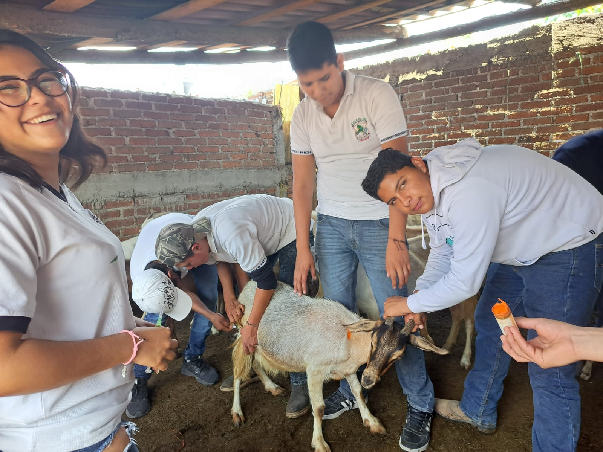
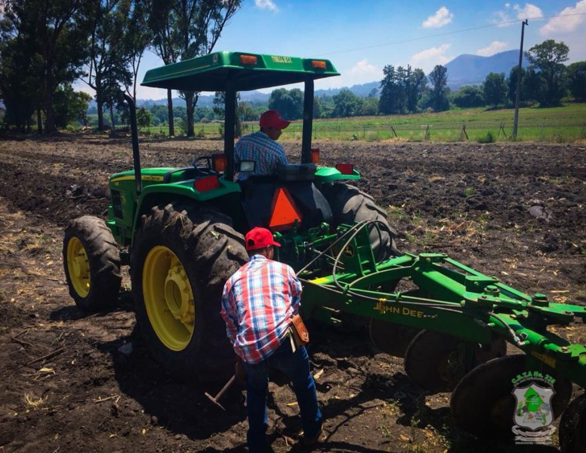

¿Qué es la Carrera Técnica Agropecuario?
El bachillerato tecnológico te ofrece la opción de estudiar el bachillerato además de cursar una carrera técnica, preparándote para continuar estudios de nivel superior o incorporarte al mercado laboral y autoemplearte.
Competencias que desarrollarás
Producción Agropecuaria
Promoverás la organización del personal para la producción agropecuaria y planearás estrategias sustentables.
Técnicas Agrícolas
Emplearás técnicas agrícolas para el manejo del agua, suelo y producción de plantas.
Manejo Pecuario
Manejarás especies pecuarias como bovinos, porcinos, ovinos, aves y caprinos.
Procesamiento
Procesarás productos hortofrutícolas, lácteos y cárnicos.
Duración del Bachillerato
La duración del bachillerato tecnológico es de seis semestres, equivalentes a tres años. La formación profesional inicia en segundo semestre y culmina en sexto semestre.
Gustos e intereses recomendables
- Sensibilidad para proyectos de bienestar social.
- Interés por el manejo de especies pecuarias.
- Interés por el cultivo agrícola regional.
- Sensibilidad al cuidado del medio ambiente.
- Trabajo en equipo y mejora continua.
- Sentido de responsabilidad.

Campo Laboral
- Analista de programas de desarrollo rural.
- Promotor agrario y consultor ambiental.
- Trabajador agrícola en viveros e invernaderos.
- Manejo y explotación de ganado.
- Operador de maquinaria agroindustrial.
Documentos que obtendrás
Al concluir tus estudios obtendrás un certificado de bachillerato y un título profesional que te acreditará como Técnico Agropecuario.